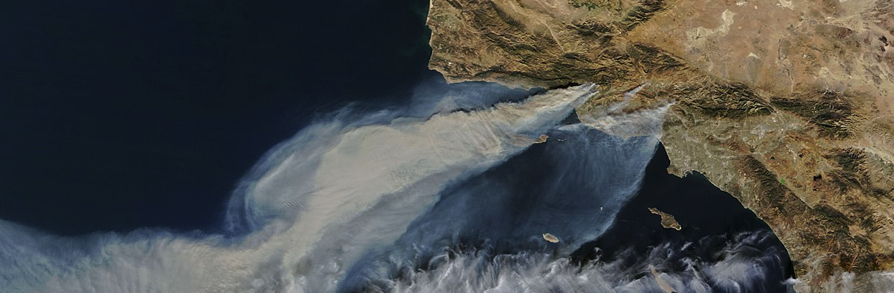
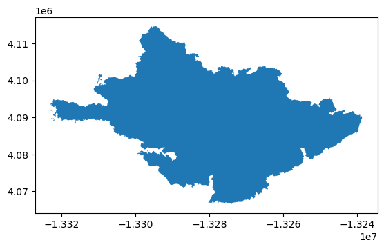
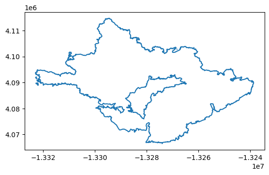
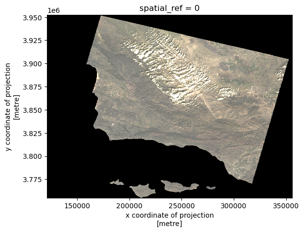
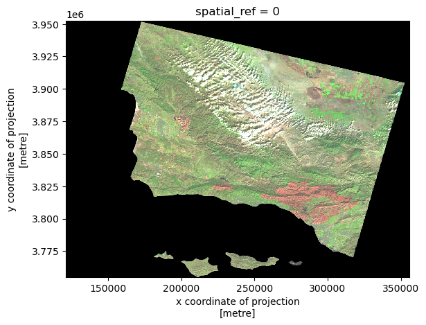
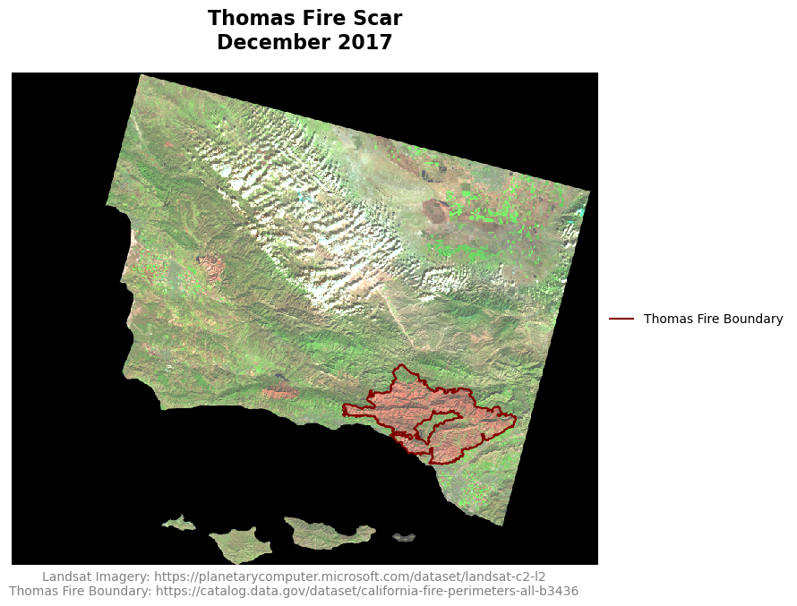
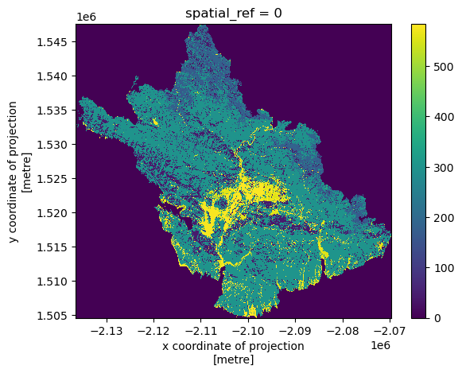
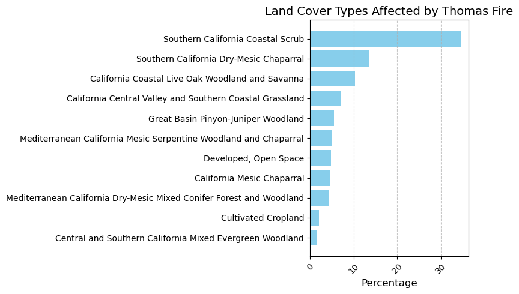

import os
import numpy as np
import pandas as pd
import geopandas as gpd
import rioxarray as rioxr
import matplotlib.pyplot as plt
import pystac_client
import planetary_computer
from IPython.display import Image 
False Color Imagery is a visual representation technique to depict data in wavelengths outside the visible spectrum, by assigning visible colors to non-visible wavelengths. This is a common practice in remote sensing to show land features that are not easily discernible to the human eye. Some remote sensing satellites carry equipment to collect data in wavelengths outside the visible spectrum, like Near-Infrared (NIR) and Shortwave Infrared (SWIR). These wavelengths can then be reassigned and visualized to create false color images of the land surface, accentuating features that would otherwise go unnoticed.
While this sounds tricky, it can be quite simple to code and visualize in programming languages, in this case Python. In this post, we will be using false color imagery to visualize the scar left behind by the Southern California Thomas Fire in December 2017, using data collected from the Landsat satellite.
The Thomas Fire was the largest wildfire in modern California history, covering an area of ~282,000 acres (1,141 sq km)1. The fire started on December 4, 2017, and destroyed more than a thousand structures before it was extinguished on January 12, 20182. After burning much of the South Santa Barbara County area, heavy rainfall3 in January 2018 presented significant risk of mudslides, ultimately resulting in the mudflow in Montecito, California, on January 9, 20184.
The purpose of this post is to act as an example of how to work with shapefiles in conjunction with raster data in Python. We will do simple exploration of the xarray.Dataset called landsat, a raster image of the Santa Barbara County area that contains data for visible, infrared, and near infrared color bands (wavelengths). We will then reassign these color bands to visible colors to generate a false color image, and overlay the boundary of the Thomas Fire.
We will also calculate statistics on the land cover types affected by the fire, using land cover data from USGS. This analysis is important, as it helps identify which types of land cover were most affected by the Thomas Fire.
Datasets
Landsat Data5: The data from Landsat is a raster image of the Santa Barbara County area, retrieved from Microsoft’s Planetary Computer. Planetary Computer can be accessed directly through Python, as done in this analysis.
Fire Perimeters Data6: This dataset was retrieved from Data.gov, containing shapefile geometries for every wildfire in California since 1878.
LANDFIRE Terrestrial Ecosystems Data7: This is a categorical raster of land cover types, with 30x30 meter resolution, collected by the US Geological Survey’s Gap Analysis Program (GAP) in 2011. This dataset also includes a CSV file giving the names of every land cover type nationally. This data was also retrieved from Microsoft’s Planetary Computer.
Importing necessary packages:
Fire Data Loading and Exploration
The fire perimeter data set is huge, containing more than 20,000 fires. In this code, we have loaded and narrowed down the data set to just the 2017 Thomas Fire, and created a new shapefile for its perimeter. This way we can save some time when running the code, as we won’t have to load the entire dataset, only the data we need.
fires = gpd.read_file("fire_perimeters/California_Fire_Perimeters_(all).shp")
print(fires.shape)
print(fires.dtypes)(22261, 22)
OBJECTID int64
YEAR_ float64
STATE object
AGENCY object
UNIT_ID object
FIRE_NAME object
INC_NUM object
ALARM_DATE object
CONT_DATE object
CAUSE float64
C_METHOD float64
OBJECTIVE float64
GIS_ACRES float64
COMMENTS object
COMPLEX_NA object
IRWINID object
FIRE_NUM object
COMPLEX_ID object
DECADES float64
Shape__Are float64
Shape__Len float64
geometry geometry
dtype: objectthomas_fire = fires[(fires['FIRE_NAME'] == 'THOMAS') & (fires['YEAR_'] == 2017)]
thomas_fire.to_file("data/thomas_fire.shp")
print(thomas_fire.shape)
print(thomas_fire.dtypes)(1, 22)
OBJECTID int64
YEAR_ float64
STATE object
AGENCY object
UNIT_ID object
FIRE_NAME object
INC_NUM object
ALARM_DATE object
CONT_DATE object
CAUSE float64
C_METHOD float64
OBJECTIVE float64
GIS_ACRES float64
COMMENTS object
COMPLEX_NA object
IRWINID object
FIRE_NUM object
COMPLEX_ID object
DECADES float64
Shape__Are float64
Shape__Len float64
geometry geometry
dtype: objectNow we can make our first basic visualization of the Thomas Fire perimeter.
thomas_fire.plot()
Notice the polygon is filled in; since we only want the perimeter, we can simply use .boundary while plotting.
thomas_fire.boundary.plot()
Landsat Data Loading and Exploration
To properly open the Landsat data, we can use a function out of the package we loaded earlier, rioxarray. This package is loaded as rioxr, and integrates the packages rasterio, used for loading raster data, and xarray, which handles labeled multidimensional arrays like time series, or in this case, multi-band imagery. We will also take a look at the head of the xarray.Dataset to see what it looks like.
fp = os.path.join("/courses/EDS220/data/hwk4_landsat_data", "landsat8-2018-01-26-sb-simplified.nc")
landsat = rioxr.open_rasterio(fp)
landsat.head()<xarray.Dataset> Size: 1kB
Dimensions: (band: 1, x: 5, y: 5)
Coordinates:
* band (band) int64 8B 1
* x (x) float64 40B 1.213e+05 1.216e+05 ... 1.221e+05 1.224e+05
* y (y) float64 40B 3.952e+06 3.952e+06 ... 3.952e+06 3.951e+06
spatial_ref int64 8B 0
Data variables:
red (band, y, x) float64 200B ...
green (band, y, x) float64 200B ...
blue (band, y, x) float64 200B ...
nir08 (band, y, x) float64 200B ...
swir22 (band, y, x) float64 200B ...It’s not the most easily digestible dataset! So we will do some basic exploration of the data, such as looking at its width, height, and bounding box. Here, the bounding box is a set of coordinates denoting ‘eastings’ and ‘northings’, or meters from the x-axis reference point in meters (the Prime Meridian) and from the y-axis reference point (the Equator). This set of two coordinates designate two opposite corners of our bounding box.
print('Height: ', landsat.rio.height)
print('Width: ', landsat.rio.width)
print('Bounding Box: ')
print(landsat.rio.bounds(), '\n')Height: 731
Width: 870
Bounding Box:
(121170.0, 3755160.0, 356070.0, 3952530.0)
This data is multidimensional, and cannot be plotted at this point. We can drop the band dimension, which makes the data two dimensional for plotting. Here you can see we have removed the band dimension and dropped its variables.
landsat = landsat.squeeze().drop_vars("band")False Color Image
Now we can try our first visualization of the Landsat data. This is where we can arrange color bands for our visualization, but for now we will arrange them in their proper places to produce a true color image. It is important to add the argument robust = True, as this excludes outlying colors that create noise and distort our true color image.
landsat[['red', 'green', 'blue']].to_array().plot.imshow(robust = True)
We can arrange color bands however we like! For this false color image, we are replacing the red band with shortwave infrared (SWIR), the green band with near infrared (NIR), and the blue band with red.
landsat[['swir22', 'nir08', 'red']].to_array().plot.imshow(robust = True)
False Color Map
Before we make a map out of the false color image, we need to make sure that the Thomas Fire perimeter shapefile is compatible with it. We can adjust the CRS of the shapefile to match that of the Landsat data.
thomas_fire = thomas_fire.to_crs(landsat.rio.crs)We will also establish an aspect ratio for out map, based on the Landsat data.
landsat_aspect_ratio = landsat.rio.width / landsat.rio.heightAnd now we can create our map!
fig, ax = plt.subplots(figsize= (10, 6*landsat_aspect_ratio))
ax.axis('off')
landsat[['swir22', 'nir08', 'red']].to_array().plot.imshow(robust = True,
ax=ax)
thomas_fire.boundary.plot(ax = ax,
color = "maroon",
label = "Thomas Fire Boundary")
ax.set_title("Thomas Fire Scar\nDecember 2017",
fontsize=16,
weight='bold',
pad=20)
fig.text(
0.5, 0.06,
"Landsat Imagery: https://planetarycomputer.microsoft.com/dataset/landsat-c2-l2\nThomas Fire Boundary: https://catalog.data.gov/dataset/california-fire-perimeters-all-b3436",
ha="center",
va="bottom",
fontsize=10,
color="gray"
)
ax.legend(
loc="center left",
bbox_to_anchor=(1, 0.5),
fontsize=10,
frameon=False
)
plt.show()
We have now generated a false color map of the Santa Barbara County area, using near and shortwave infrared to emphasize the fire scar left by the Thomas Fire. The boundary of the Thomas Fire has been overlayed to display the exact area affected by the fire. By replacing the red, green, and blue bands with shortwave infrared, near infrared, and red bands respectively, we can highlight burned areas, vegetation, and bodies of water. Burned areas appear in dark red and brown, as they strongly reflect shortwave infrared but absorb visible light. Living vegetation appears in bright green colors as it strongly reflects near infrared light. This method provides a clearer view of the Thomas Fire’s impact on the landsacape.
Land Cover Statistics
In order to calculate land cover statistics for the Thomas Fire, we need to load the land cover data for the extent of the fire perimeter. Here we can use a list of coordinates from the thomas_fire shapefile (the eastings and northings I mentioned above) to isolate just the area of the land cover raster that we need. These coordinates need to be in the Coordinate Reference System (CRS) 4326, also known as EPSG:4326 or WGS84, as this is the CRS of the land cover data.
thomas_fire_bbox = list(thomas_fire.to_crs('epsg:4326').total_bounds)
thomas_fire_bbox[-119.68162520650904,
34.279899796001956,
-118.92518097019486,
34.63745683414112]Now we can import the land cover labels from the CSV file included with the GAP data. This CSV contains labels for every land cover type in the country, and so there are many that are irrelevant to this analysis, as seen when viewing the data head. Notice that there is a NULL value (0), which is used for areas outside the areas of interest (oceans).
labels = pd.read_csv(os.path.join('/','courses','EDS220','data', 'GAP_National_Terrestrial_Ecosystems.csv'))
labels.head()| class_label | code | |
|---|---|---|
| 0 | 0 | 0 |
| 1 | South Florida Bayhead Swamp | 1 |
| 2 | South Florida Cypress Dome | 2 |
| 3 | South Florida Dwarf Cypress Savanna | 3 |
| 4 | South Florida Mangrove Swamp | 4 |
Next, we connect to the Microsoft Planetary Computer data catalog and perform a search to find our land cover data. The collection ID for the data is gap:
catalog = pystac_client.Client.open(
"https://planetarycomputer.microsoft.com/api/stac/v1",
modifier=planetary_computer.sign_inplace,
)
search = catalog.search(collections = ['gap'],
bbox = thomas_fire_bbox)
search<pystac_client.item_search.ItemSearch at 0x7fa11f009190>This is what we get after our search. Now have to take another step to retrieve the item from the search.
items = search.item_collection()
print(f"Returned {len(items)} Items")
itemsReturned 1 Items- type "FeatureCollection"
features[] 1 items
0
- type "Feature"
- stac_version "1.0.0"
stac_extensions[] 2 items
- 0 "https://stac-extensions.github.io/projection/v1.0.0/schema.json"
- 1 "https://stac-extensions.github.io/label/v1.0.0/schema.json"
- id "gap_landfire_nationalterrestrialecosystems2011_-2361135_1762215_-2061135_1462215"
geometry
- type "Polygon"
coordinates[] 1 items
0[] 5 items
0[] 2 items
- 0 -118.69342028
- 1 33.99971716
1[] 2 items
- 0 -119.49405483
- 1 36.60171547
2[] 2 items
- 0 -122.74636922
- 1 35.90181191
3[] 2 items
- 0 -121.84549185
- 1 33.32121517
4[] 2 items
- 0 -118.69342028
- 1 33.99971716
bbox[] 4 items
- 0 -122.74636921535789
- 1 33.32121516682673
- 2 -118.69342027702393
- 3 36.60171546740399
properties
- datetime "2011-12-31T00:00:00Z"
- proj:wkt2 "PROJCS["NAD83 / Conus Albers",GEOGCS["NAD83",DATUM["North_American_Datum_1983",SPHEROID["GRS 1980",6378137,298.257222101,AUTHORITY["EPSG","7019"]],AUTHORITY["EPSG","6269"]],PRIMEM["Greenwich",0,AUTHORITY["EPSG","8901"]],UNIT["degree",0.0174532925199433,AUTHORITY["EPSG","9122"]],AUTHORITY["EPSG","4269"]],PROJECTION["Albers_Conic_Equal_Area"],PARAMETER["latitude_of_center",23],PARAMETER["longitude_of_center",-96],PARAMETER["standard_parallel_1",29.5],PARAMETER["standard_parallel_2",45.5],PARAMETER["false_easting",0],PARAMETER["false_northing",0],UNIT["metre",1,AUTHORITY["EPSG","9001"]],AXIS["Easting",EAST],AXIS["Northing",NORTH],AUTHORITY["EPSG","5070"]]"
- label:type "raster"
proj:shape[] 2 items
- 0 10000
- 1 10000
- end_datetime "2011-12-31T00:00:00+00:00"
label:classes[] 1 items
0
- name ""
classes[] 585 items
- 0 "0"
- 1 "South Florida Bayhead Swamp"
- 2 "South Florida Cypress Dome"
- 3 "South Florida Dwarf Cypress Savanna"
- 4 "South Florida Mangrove Swamp"
- 5 "South Florida Hardwood Hammock"
- 6 "Southeast Florida Coastal Strand and Maritime Hammock"
- 7 "Southwest Florida Coastal Strand and Maritime Hammock"
- 8 "South Florida Pine Rockland"
- 9 "Atlantic Coastal Plain Fall-line Sandhills Longleaf Pine Woodland - Open Understory"
- 10 "Atlantic Coastal Plain Fall-line Sandhills Longleaf Pine Woodland - Scrub/Shrub Understory"
- 11 "Atlantic Coastal Plain Upland Longleaf Pine Woodland"
- 12 "Atlantic Coastal Plain Xeric River Dune"
- 13 "East Gulf Coastal Plain Interior Upland Longleaf Pine Woodland - Open Understory Modifier"
- 14 "East Gulf Coastal Plain Interior Upland Longleaf Pine Woodland - Scrub/Shrub Modifier"
- 15 "Florida Longleaf Pine Sandhill - Scrub/Shrub Understory Modifier"
- 16 "Florida Longleaf Pine Sandhill- Open Understory Modifier"
- 17 "West Gulf Coastal Plain Upland Longleaf Pine Forest and Woodland"
- 18 "Atlantic Coastal Plain Central Maritime Forest"
- 19 "Atlantic Coastal Plain Southern Maritime Forest"
- 20 "Central and South Texas Coastal Fringe Forest and Woodland"
- 21 "East Gulf Coastal Plain Limestone Forest"
- 22 "East Gulf Coastal Plain Maritime Forest"
- 23 "East Gulf Coastal Plain Southern Loess Bluff Forest"
- 24 "East Gulf Coastal Plain Southern Mesic Slope Forest"
- 25 "Mississippi Delta Maritime Forest"
- 26 "Southern Coastal Plain Dry Upland Hardwood Forest"
- 27 "Southern Coastal Plain Oak Dome and Hammock"
- 28 "West Gulf Coastal Plain Chenier and Upper Texas Coastal Fringe Forest and Woodland"
- 29 "West Gulf Coastal Plain Mesic Hardwood Forest"
- 30 "East-Central Texas Plains Pine Forest and Woodland"
- 31 "West Gulf Coastal Plain Pine-Hardwood Forest"
- 32 "West Gulf Coastal Plain Sandhill Oak and Shortleaf Pine Forest and Woodland"
- 33 "Atlantic Coastal Plain Fall-Line Sandhills Longleaf Pine Woodland - Loblolly Modifier"
- 34 "Deciduous Plantations"
- 35 "East Gulf Coastal Plain Interior Upland Longleaf Pine Woodland - Loblolly Modifier"
- 36 "East Gulf Coastal Plain Interior Upland Longleaf Pine Woodland - Offsite Hardwood Modifier"
- 37 "East Gulf Coastal Plain Near-Coast Pine Flatwoods - Offsite Hardwood Modifier"
- 38 "Evergreen Plantation or Managed Pine"
- 39 "California Central Valley Mixed Oak Savanna"
- 40 "California Coastal Closed-Cone Conifer Forest and Woodland"
- 41 "California Coastal Live Oak Woodland and Savanna"
- 42 "California Lower Montane Blue Oak-Foothill Pine Woodland and Savanna"
- 43 "Central and Southern California Mixed Evergreen Woodland"
- 44 "Mediterranean California Lower Montane Black Oak-Conifer Forest and Woodland"
- 45 "Southern California Oak Woodland and Savanna"
- 46 "Madrean Encinal"
- 47 "Madrean Pinyon-Juniper Woodland"
- 48 "Madrean Pine-Oak Forest and Woodland"
- 49 "Madrean Upper Montane Conifer-Oak Forest and Woodland"
- 50 "Edwards Plateau Dry-Mesic Slope Forest and Woodland"
- 51 "Edwards Plateau Limestone Savanna and Woodland"
- 52 "Edwards Plateau Mesic Canyon"
- 53 "Llano Uplift Acidic Forest, Woodland and Glade"
- 54 "East Cascades Oak-Ponderosa Pine Forest and Woodland"
- 55 "Mediterranean California Mixed Evergreen Forest"
- 56 "Mediterranean California Mixed Oak Woodland"
- 57 "North Pacific Dry Douglas-fir-(Madrone) Forest and Woodland"
- 58 "North Pacific Oak Woodland"
- 59 "Edwards Plateau Limestone Shrubland"
- 60 "Allegheny-Cumberland Dry Oak Forest and Woodland - Hardwood"
- 61 "Allegheny-Cumberland Dry Oak Forest and Woodland - Pine Modifier"
- 62 "Central and Southern Appalachian Montane Oak Forest"
- 63 "Central and Southern Appalachian Northern Hardwood Forest"
- 64 "Central Appalachian Oak and Pine Forest"
- 65 "Crosstimbers Oak Forest and Woodland"
- 66 "East Gulf Coastal Plain Black Belt Calcareous Prairie and Woodland - Woodland Modifier"
- 67 "East Gulf Coastal Plain Northern Dry Upland Hardwood Forest"
- 68 "East Gulf Coastal Plain Northern Loess Plain Oak-Hickory Upland - Hardwood Modifier"
- 69 "East Gulf Coastal Plain Northern Loess Plain Oak-Hickory Upland - Juniper Modifier"
- 70 "East-Central Texas Plains Post Oak Savanna and Woodland"
- 71 "Lower Mississippi River Dune Woodland and Forest"
- 72 "Mississippi River Alluvial Plain Dry-Mesic Loess Slope Forest"
- 73 "North-Central Interior Dry Oak Forest and Woodland"
- 74 "North-Central Interior Dry-Mesic Oak Forest and Woodland"
- 75 "Northeastern Interior Dry Oak Forest - Mixed Modifier"
- 76 "Northeastern Interior Dry Oak Forest - Virginia/Pitch Pine Modifier"
- 77 "Northeastern Interior Dry Oak Forest-Hardwood Modifier"
- 78 "Northeastern Interior Dry-Mesic Oak Forest"
- 79 "Northern Atlantic Coastal Plain Dry Hardwood Forest"
- 80 "Crowleys Ridge Sand Forest"
- 81 "Ouachita Montane Oak Forest"
- 82 "Ozark-Ouachita Dry Oak Woodland"
- 83 "Ozark-Ouachita Dry-Mesic Oak Forest"
- 84 "Southern and Central Appalachian Oak Forest"
- 85 "Southern and Central Appalachian Oak Forest - Xeric"
- 86 "Southern Interior Low Plateau Dry-Mesic Oak Forest"
- 87 "Southern Ridge and Valley Dry Calcareous Forest"
- 88 "Southern Ridge and Valley Dry Calcareous Forest - Pine modifier"
- 89 "East Gulf Coastal Plain Northern Dry Upland Hardwood Forest - Offsite Pine Modifier"
- 90 "Managed Tree Plantation"
- 91 "Ruderal forest"
- 92 "Southern Piedmont Dry Oak-(Pine) Forest - Loblolly Pine Modifier"
- 93 "Acadian Low-Elevation Spruce-Fir-Hardwood Forest"
- 94 "Acadian-Appalachian Montane Spruce-Fir Forest"
- 95 "Appalachian Hemlock-Hardwood Forest"
- 96 "Central and Southern Appalachian Spruce-Fir Forest"
- 97 "0"
- 98 "Laurentian-Acadian Northern Hardwoods Forest"
- 99 "Laurentian-Acadian Northern Pine-(Oak) Forest"
- 100 "Laurentian-Acadian Pine-Hemlock-Hardwood Forest"
- 101 "Paleozoic Plateau Bluff and Talus"
- 102 "Southern Appalachian Northern Hardwood Forest"
- 103 "Atlantic Coastal Plain Dry and Dry-Mesic Oak Forest"
- 104 "Atlantic Coastal Plain Fall-line Sandhills Longleaf Pine Woodland - Offsite Hardwood"
- 105 "East Gulf Coastal Plain Interior Shortleaf Pine-Oak Forest - Hardwood Modifier"
- 106 "East Gulf Coastal Plain Interior Shortleaf Pine-Oak Forest - Mixed Modifier"
- 107 "Ozark-Ouachita Shortleaf Pine-Bluestem Woodland"
- 108 "Ozark-Ouachita Shortleaf Pine-Oak Forest and Woodland"
- 109 "Southeastern Interior Longleaf Pine Woodland"
- 110 "Southern Appalachian Low Mountain Pine Forest"
- 111 "Southern Piedmont Dry Oak-(Pine) Forest"
- 112 "Southern Piedmont Dry Oak-(Pine) Forest - Hardwood Modifier"
- 113 "Southern Piedmont Dry Oak-(Pine) Forest - Mixed Modifier"
- 114 "Southern Piedmont Dry Oak-Heath Forest - Mixed Modifier"
- 115 "Eastern Great Plains Tallgrass Aspen Parkland"
- 116 "Northwestern Great Plains Aspen Forest and Parkland"
- 117 "Northwestern Great Plains Shrubland"
- 118 "Western Great Plains Dry Bur Oak Forest and Woodland"
- 119 "Western Great Plains Wooded Draw and Ravine"
- 120 "Southern Atlantic Coastal Plain Mesic Hardwood Forest"
- 121 "East Gulf Coastal Plain Northern Loess Bluff Forest"
- 122 "East Gulf Coastal Plain Northern Mesic Hardwood Forest"
- 123 "North-Central Interior Beech-Maple Forest"
- 124 "North-Central Interior Maple-Basswood Forest"
- 125 "Ozark-Ouachita Mesic Hardwood Forest"
- 126 "South-Central Interior Mesophytic Forest"
- 127 "Southern and Central Appalachian Cove Forest"
- 128 "Crowleys Ridge Mesic Loess Slope Forest"
- 129 "Southern Piedmont Mesic Forest"
- 130 "Appalachian Shale Barrens"
- 131 "Atlantic Coastal Plain Northern Maritime Forest"
- 132 "Laurentian Pine-Oak Barrens"
- 133 "Northeastern Interior Pine Barrens"
- 134 "Northern Atlantic Coastal Plain Pitch Pine Barrens"
- 135 "Southern Appalachian Montane Pine Forest and Woodland"
- 136 "East Cascades Mesic Montane Mixed-Conifer Forest and Woodland"
- 137 "Middle Rocky Mountain Montane Douglas-fir Forest and Woodland"
- 138 "Northern Rocky Mountain Dry-Mesic Montane Mixed Conifer Forest"
- 139 "Northern Rocky Mountain Foothill Conifer Wooded Steppe"
- 140 "Northern Rocky Mountain Mesic Montane Mixed Conifer Forest"
- 141 "Northern Rocky Mountain Ponderosa Pine Woodland and Savanna"
- 142 "Northern Rocky Mountain Western Larch Savanna"
- 143 "Northwestern Great Plains - Black Hills Ponderosa Pine Woodland and Savanna"
- 144 "Rocky Mountain Foothill Limber Pine-Juniper Woodland"
- 145 "Inter-Mountain Basins Aspen-Mixed Conifer Forest and Woodland"
- 146 "Inter-Mountain Basins Subalpine Limber-Bristlecone Pine Woodland"
- 147 "Northern Rocky Mountain Subalpine Woodland and Parkland"
- 148 "Rocky Mountain Aspen Forest and Woodland"
- 149 "Rocky Mountain Lodgepole Pine Forest"
- 150 "Rocky Mountain Poor-Site Lodgepole Pine Forest"
- 151 "Rocky Mountain Subalpine Dry-Mesic Spruce-Fir Forest and Woodland"
- 152 "Rocky Mountain Subalpine Mesic Spruce-Fir Forest and Woodland"
- 153 "Rocky Mountain Subalpine-Montane Limber-Bristlecone Pine Woodland"
- 154 "Rocky Mountain Bigtooth Maple Ravine Woodland"
- 155 "Southern Rocky Mountain Dry-Mesic Montane Mixed Conifer Forest and Woodland"
- 156 "Southern Rocky Mountain Mesic Montane Mixed Conifer Forest and Woodland"
- 157 "Southern Rocky Mountain Ponderosa Pine Savanna"
- 158 "Southern Rocky Mountain Ponderosa Pine Woodland"
- 159 "California Montane Jeffrey Pine-(Ponderosa Pine) Woodland"
- 160 "Klamath-Siskiyou Lower Montane Serpentine Mixed Conifer Woodland"
- 161 "Klamath-Siskiyou Upper Montane Serpentine Mixed Conifer Woodland"
- 162 "Mediterranean California Dry-Mesic Mixed Conifer Forest and Woodland"
- 163 "Mediterranean California Mesic Mixed Conifer Forest and Woodland"
- 164 "Sierran-Intermontane Desert Western White Pine-White Fir Woodland"
- 165 "California Coastal Redwood Forest"
- 166 "North Pacific Broadleaf Landslide Forest and Shrubland"
- 167 "North Pacific Dry-Mesic Silver Fir-Western Hemlock-Douglas-fir Forest"
- 168 "North Pacific Hypermaritime Sitka Spruce Forest"
- 169 "North Pacific Hypermaritime Western Red-cedar-Western Hemlock Forest"
- 170 "North Pacific Lowland Mixed Hardwood-Conifer Forest and Woodland"
- 171 "North Pacific Maritime Dry-Mesic Douglas-fir-Western Hemlock Forest"
- 172 "North Pacific Maritime Mesic-Wet Douglas-fir-Western Hemlock Forest"
- 173 "North Pacific Mesic Western Hemlock-Silver Fir Forest"
- 174 "North Pacific Wooded Volcanic Flowage"
- 175 "Mediterranean California Red Fir Forest"
- 176 "Mediterranean California Subalpine Woodland"
- 177 "North Pacific Maritime Mesic Subalpine Parkland"
- 178 "North Pacific Mountain Hemlock Forest"
- 179 "Northern California Mesic Subalpine Woodland"
- 180 "Northern Pacific Mesic Subalpine Woodland"
- 181 "Sierra Nevada Subalpine Lodgepole Pine Forest and Woodland"
- 182 "Columbia Plateau Western Juniper Woodland and Savanna"
- 183 "Great Basin Pinyon-Juniper Woodland"
- 184 "Inter-Mountain Basins Curl-leaf Mountain Mahogany Woodland and Shrubland"
- 185 "Inter-Mountain Basins Juniper Savanna"
- 186 "Colorado Plateau Pinyon-Juniper Shrubland"
- 187 "Colorado Plateau Pinyon-Juniper Woodland"
- 188 "Southern Rocky Mountain Juniper Woodland and Savanna"
- 189 "Southern Rocky Mountain Pinyon-Juniper Woodland"
- 190 "Northwestern Great Plains Floodplain"
- 191 "Northwestern Great Plains Riparian"
- 192 "Western Great Plains Floodplain"
- 193 "Western Great Plains Floodplain Systems"
- 194 "Western Great Plains Riparian Woodland and Shrubland"
- 195 "Central Appalachian Floodplain - Forest Modifier"
- 196 "Central Appalachian Riparian - Forest Modifier"
- 197 "Central Interior and Appalachian Floodplain Systems"
- 198 "Central Interior and Appalachian Riparian Systems"
- 199 "Laurentian-Acadian Floodplain Systems"
- 200 "Ozark-Ouachita Riparian"
- 201 "South-Central Interior Large Floodplain"
- 202 "South-Central Interior Large Floodplain - Forest Modifier"
- 203 "South-Central Interior Small Stream and Riparian"
- 204 "North-Central Interior and Appalachian Rich Swamp"
- 205 "0"
- 206 "0"
- 207 "Laurentian-Acadian Swamp Systems"
- 208 "North-Central Interior Wet Flatwoods"
- 209 "0"
- 210 "South-Central Interior / Upper Coastal Plain Wet Flatwoods"
- 211 "0"
- 212 "Southern Piedmont/Ridge and Valley Upland Depression Swamp"
- 213 "Atlantic Coastal Plain Blackwater Stream Floodplain Forest - Forest Modifier"
- 214 "Atlantic Coastal Plain Brownwater Stream Floodplain Forest"
- 215 "Atlantic Coastal Plain Northern Tidal Wooded Swamp"
- 216 "Atlantic Coastal Plain Small Blackwater River Floodplain Forest"
- 217 "Atlantic Coastal Plain Small Brownwater River Floodplain Forest"
- 218 "Atlantic Coastal Plain Southern Tidal Wooded Swamp"
- 219 "East Gulf Coastal Plain Large River Floodplain Forest - Forest Modifier"
- 220 "East Gulf Coastal Plain Small Stream and River Floodplain Forest"
- 221 "East Gulf Coastal Plain Tidal Wooded Swamp"
- 222 "0"
- 223 "Southeastern Great Plains Riparian Forest"
- 224 "Southeastern Great Plains Floodplain Forest"
- 225 "Mississippi River Bottomland Depression"
- 226 "Mississippi River Floodplain and Riparian Forest"
- 227 "Mississippi River Low Floodplain (Bottomland) Forest"
- 228 "Mississippi River Riparian Forest"
- 229 "Red River Large Floodplain Forest"
- 230 "Southern Coastal Plain Blackwater River Floodplain Forest"
- 231 "Southern Piedmont Large Floodplain Forest - Forest Modifier"
- 232 "Southern Piedmont Small Floodplain and Riparian Forest"
- 233 "West Gulf Coastal Plain Large River Floodplain Forest"
- 234 "West Gulf Coastal Plain Near-Coast Large River Swamp"
- 235 "West Gulf Coastal Plain Small Stream and River Forest"
- 236 "Atlantic Coastal Plain Streamhead Seepage Swamp - Pocosin - and Baygall"
- 237 "Gulf and Atlantic Coastal Plain Swamp Systems"
- 238 "Southern Coastal Plain Hydric Hammock"
- 239 "Southern Coastal Plain Seepage Swamp and Baygall"
- 240 "West Gulf Coastal Plain Seepage Swamp and Baygall"
- 241 "Atlantic Coastal Plain Nonriverine Swamp and Wet Hardwood Forest - Taxodium/Nyssa Modifier"
- 242 "Atlantic Coastal Plain Nonriverine Swamp and Wet Hardwood Forest - Oak Dominated Modifier"
- 243 "East Gulf Coastal Plain Southern Loblolly-Hardwood Flatwoods"
- 244 "Lower Mississippi River Bottomland Depressions - Forest Modifier"
- 245 "Lower Mississippi River Flatwoods"
- 246 "Northern Atlantic Coastal Plain Basin Swamp and Wet Hardwood Forest"
- 247 "Southern Coastal Plain Nonriverine Basin Swamp"
- 248 "Southern Coastal Plain Nonriverine Basin Swamp - Okefenokee Bay/Gum Modifier"
- 249 "Southern Coastal Plain Nonriverine Basin Swamp - Okefenokee Pine Modifier"
- 250 "Southern Coastal Plain Nonriverine Basin Swamp - Okefenokee Taxodium Modifier"
- 251 "West Gulf Coastal Plain Nonriverine Wet Hardwood Flatwoods"
- 252 "West Gulf Coastal Plain Pine-Hardwood Flatwoods"
- 253 "Edwards Plateau Riparian"
- 254 "Atlantic Coastal Plain Clay-Based Carolina Bay Forested Wetland"
- 255 "Atlantic Coastal Plain Clay-Based Carolina Bay Herbaceous Wetland"
- 256 "Atlantic Coastal Plain Southern Wet Pine Savanna and Flatwoods"
- 257 "Central Atlantic Coastal Plain Wet Longleaf Pine Savanna and Flatwoods"
- 258 "Central Florida Pine Flatwoods"
- 259 "East Gulf Coastal Plain Near-Coast Pine Flatwoods"
- 260 "East Gulf Coastal Plain Near-Coast Pine Flatwoods - Open Understory Modifier"
- 261 "East Gulf Coastal Plain Near-Coast Pine Flatwoods - Scrub/Shrub Understory Modifier"
- 262 "South Florida Pine Flatwoods"
- 263 "Southern Coastal Plain Nonriverine Cypress Dome"
- 264 "West Gulf Coastal Plain Wet Longleaf Pine Savanna and Flatwoods"
- 265 "Columbia Basin Foothill Riparian Woodland and Shrubland"
- 266 "Great Basin Foothill and Lower Montane Riparian Woodland and Shrubland"
- 267 "0"
- 268 "Northern Rocky Mountain Conifer Swamp"
- 269 "Northern Rocky Mountain Lower Montane Riparian Woodland and Shrubland"
- 270 "Rocky Mountain Lower Montane Riparian Woodland and Shrubland"
- 271 "Rocky Mountain Montane Riparian Systems"
- 272 "Rocky Mountain Subalpine-Montane Riparian Woodland"
- 273 "North Pacific Hardwood-Conifer Swamp"
- 274 "North Pacific Lowland Riparian Forest and Shrubland"
- 275 "North Pacific Montane Riparian Woodland and Shrubland"
- 276 "North Pacific Shrub Swamp"
- 277 "California Central Valley Riparian Woodland and Shrubland"
- 278 "Mediterranean California Foothill and Lower Montane Riparian Woodland"
- 279 "Mediterranean California Serpentine Foothill and Lower Montane Riparian Woodland and Seep"
- 280 "North American Warm Desert Lower Montane Riparian Woodland and Shrubland"
- 281 "North American Warm Desert Riparian Systems"
- 282 "North American Warm Desert Riparian Woodland and Shrubland"
- 283 "Tamaulipan Floodplain"
- 284 "Tamaulipan Riparian Systems"
- 285 "Boreal Aspen-Birch Forest"
- 286 "Boreal Jack Pine-Black Spruce Forest"
- 287 "Boreal White Spruce-Fir-Hardwood Forest"
- 288 "Boreal-Laurentian Conifer Acidic Swamp and Treed Poor Fen"
- 289 "Eastern Boreal Floodplain"
- 290 "South Florida Shell Hash Beach"
- 291 "Southeast Florida Beach"
- 292 "Southwest Florida Beach"
- 293 "South Florida Everglades Sawgrass Marsh"
- 294 "South Florida Freshwater Slough and Gator Hole"
- 295 "South Florida Wet Marl Prairie"
- 296 "California Maritime Chaparral"
- 297 "California Mesic Chaparral"
- 298 "California Xeric Serpentine Chaparral"
- 299 "Klamath-Siskiyou Xeromorphic Serpentine Savanna and Chaparral"
- 300 "Mediterranean California Mesic Serpentine Woodland and Chaparral"
- 301 "Northern and Central California Dry-Mesic Chaparral"
- 302 "Southern California Dry-Mesic Chaparral"
- 303 "Southern California Coastal Scrub"
- 304 "California Central Valley and Southern Coastal Grassland"
- 305 "California Mesic Serpentine Grassland"
- 306 "Columbia Basin Foothill and Canyon Dry Grassland"
- 307 "Columbia Basin Palouse Prairie"
- 308 "North Pacific Alpine and Subalpine Dry Grassland"
- 309 "North Pacific Montane Grassland"
- 310 "North Pacific Montane Shrubland"
- 311 "Northern Rocky Mountain Lower Montane, Foothill and Valley Grassland"
- 312 "Northern Rocky Mountain Montane-Foothill Deciduous Shrubland"
- 313 "Northern Rocky Mountain Subalpine Deciduous Shrubland"
- 314 "Northern Rocky Mountain Subalpine-Upper Montane Grassland"
- 315 "Southern Rocky Mountain Montane-Subalpine Grassland"
- 316 "Rocky Mountain Gambel Oak-Mixed Montane Shrubland"
- 317 "Rocky Mountain Lower Montane-Foothill Shrubland"
- 318 "California Northern Coastal Grassland"
- 319 "North Pacific Herbaceous Bald and Bluff"
- 320 "North Pacific Hypermaritime Shrub and Herbaceous Headland"
- 321 "Willamette Valley Upland Prairie and Savanna"
- 322 "Mediterranean California Subalpine Meadow"
- 323 "Rocky Mountain Subalpine-Montane Mesic Meadow"
- 324 "Central Mixedgrass Prairie"
- 325 "Northwestern Great Plains Mixedgrass Prairie"
- 326 "Western Great Plains Foothill and Piedmont Grassland"
- 327 "Western Great Plains Tallgrass Prairie"
- 328 "Western Great Plains Sand Prairie"
- 329 "Western Great Plains Sandhill Steppe"
- 330 "Western Great Plains Mesquite Woodland and Shrubland"
- 331 "Western Great Plains Shortgrass Prairie"
- 332 "Arkansas Valley Prairie and Woodland"
- 333 "Central Tallgrass Prairie"
- 334 "North-Central Interior Oak Savanna"
- 335 "North-Central Interior Sand and Gravel Tallgrass Prairie"
- 336 "North-Central Oak Barrens"
- 337 "Northern Tallgrass Prairie"
- 338 "Southeastern Great Plains Tallgrass Prairie"
- 339 "Texas Blackland Tallgrass Prairie"
- 340 "Texas-Louisiana Coastal Prairie"
- 341 "Central Appalachian Pine-Oak Rocky Woodland"
- 342 "Southern Appalachian Grass and Shrub Bald"
- 343 "Southern Appalachian Grass and Shrub Bald - Herbaceous Modifier"
- 344 "Southern Appalachian Grass and Shrub Bald - Shrub Modifier"
- 345 "Central Appalachian Alkaline Glade and Woodland"
- 346 "Central Interior Highlands Calcareous Glade and Barrens"
- 347 "Central Interior Highlands Dry Acidic Glade and Barrens"
- 348 "Cumberland Sandstone Glade and Barrens"
- 349 "Great Lakes Alvar"
- 350 "Nashville Basin Limestone Glade"
- 351 "Southern Ridge and Valley / Cumberland Dry Calcareous Forest"
- 352 "Southern Piedmont Glade and Barrens"
- 353 "East Gulf Coastal Plain Black Belt Calcareous Prairie and Woodland - Herbaceous Modifier"
- 354 "East Gulf Coastal Plain Jackson Prairie and Woodland"
- 355 "Eastern Highland Rim Prairie and Barrens - Dry Modifier"
- 356 "Coahuilan Chaparral"
- 357 "Madrean Oriental Chaparral"
- 358 "Mogollon Chaparral"
- 359 "Sonora-Mojave Semi-Desert Chaparral"
- 360 "California Montane Woodland and Chaparral"
- 361 "Great Basin Semi-Desert Chaparral"
- 362 "Florida Dry Prairie"
- 363 "Florida Peninsula Inland Scrub"
- 364 "West Gulf Coastal Plain Catahoula Barrens"
- 365 "West Gulf Coastal Plain Nepheline Syenite Glade"
- 366 "East Gulf Coastal Plain Jackson Plain Dry Flatwoods - Open Understory Modifier"
- 367 "West Gulf Coastal Plain Northern Calcareous Prairie"
- 368 "West Gulf Coastal Plain Southern Calcareous Prairie"
- 369 "Acadian-Appalachian Subalpine Woodland and Heath-Krummholz"
- 370 "Atlantic and Gulf Coastal Plain Interdunal Wetland"
- 371 "Atlantic Coastal Plain Southern Dune and Maritime Grassland"
- 372 "Central and Upper Texas Coast Dune and Coastal Grassland"
- 373 "East Gulf Coastal Plain Dune and Coastal Grassland"
- 374 "Great Lakes Dune"
- 375 "Northern Atlantic Coastal Plain Dune and Swale"
- 376 "Northern Atlantic Coastal Plain Heathland and Grassland"
- 377 "South Texas Dune and Coastal Grassland"
- 378 "South Texas Sand Sheet Grassland"
- 379 "Southwest Florida Dune and Coastal Grassland"
- 380 "North Pacific Coastal Cliff and Bluff"
- 381 "North Pacific Maritime Coastal Sand Dune and Strand"
- 382 "Northern California Coastal Scrub"
- 383 "Mediterranean California Coastal Bluff"
- 384 "Mediterranean California Northern Coastal Dune"
- 385 "Mediterranean California Southern Coastal Dune"
- 386 "Atlantic Coastal Plain Northern Sandy Beach"
- 387 "Atlantic Coastal Plain Sea Island Beach"
- 388 "Atlantic Coastal Plain Southern Beach"
- 389 "Florida Panhandle Beach Vegetation"
- 390 "Louisiana Beach"
- 391 "Northern Atlantic Coastal Plain Sandy Beach"
- 392 "Texas Coastal Bend Beach"
- 393 "Upper Texas Coast Beach"
- 394 "0"
- 395 "Mediterranean California Serpentine Fen"
- 396 "Mediterranean California Subalpine-Montane Fen"
- 397 "North Pacific Bog and Fen"
- 398 "Rocky Mountain Subalpine-Montane Fen"
- 399 "Atlantic Coastal Plain Peatland Pocosin"
- 400 "Southern and Central Appalachian Bog and Fen"
- 401 "Atlantic Coastal Plain Central Fresh-Oligohaline Tidal Marsh"
- 402 "Atlantic Coastal Plain Embayed Region Tidal Freshwater Marsh"
- 403 "Atlantic Coastal Plain Northern Fresh and Oligohaline Tidal Marsh"
- 404 "Florida Big Bend Fresh-Oligohaline Tidal Marsh"
- 405 "Atlantic Coastal Plain Depression Pondshore"
- 406 "Atlantic Coastal Plain Large Natural Lakeshore"
- 407 "Central Florida Herbaceous Pondshore"
- 408 "Central Florida Herbaceous Seep"
- 409 "East Gulf Coastal Plain Savanna and Wet Prairie"
- 410 "East Gulf Coastal Plain Depression Pondshore"
- 411 "Floridian Highlands Freshwater Marsh"
- 412 "Southern Coastal Plain Herbaceous Seepage Bog"
- 413 "Southern Coastal Plain Nonriverine Basin Swamp - Okefenokee Clethra Modifier"
- 414 "Southern Coastal Plain Nonriverine Basin Swamp - Okefenokee Nupea Modifier"
- 415 "Texas-Louisiana Coastal Prairie Slough"
- 416 "Central Interior and Appalachian Shrub-Herbaceous Wetland Systems"
- 417 "Great Lakes Coastal Marsh Systems"
- 418 "0"
- 419 "0"
- 420 "Laurentian-Acadian Shrub-Herbaceous Wetland Systems"
- 421 "0"
- 422 "Eastern Great Plains Wet Meadow, Prairie and Marsh"
- 423 "Great Lakes Wet-Mesic Lakeplain Prairie"
- 424 "Great Plains Prairie Pothole"
- 425 "Western Great Plains Closed Depression Wetland"
- 426 "Western Great Plains Depressional Wetland Systems"
- 427 "Western Great Plains Open Freshwater Depression Wetland"
- 428 "Cumberland Riverscour"
- 429 "Inter-Mountain Basins Interdunal Swale Wetland"
- 430 "North Pacific Avalanche Chute Shrubland"
- 431 "North Pacific Intertidal Freshwater Wetland"
- 432 "Temperate Pacific Freshwater Emergent Marsh"
- 433 "Temperate Pacific Freshwater Mudflat"
- 434 "Columbia Plateau Vernal Pool"
- 435 "Northern California Claypan Vernal Pool"
- 436 "Northern Rocky Mountain Wooded Vernal Pool"
- 437 "Columbia Plateau Silver Sagebrush Seasonally Flooded Shrub-Steppe"
- 438 "Rocky Mountain Alpine-Montane Wet Meadow"
- 439 "Rocky Mountain Subalpine-Montane Riparian Shrubland"
- 440 "Temperate Pacific Montane Wet Meadow"
- 441 "Willamette Valley Wet Prairie"
- 442 "Chihuahuan-Sonoran Desert Bottomland and Swale Grassland"
- 443 "North American Arid West Emergent Marsh"
- 444 "North American Warm Desert Riparian Mesquite Bosque"
- 445 "Western Great Plains Saline Depression Wetland"
- 446 "Acadian Salt Marsh and Estuary Systems"
- 447 "Atlantic Coastal Plain Central Salt and Brackish Tidal Marsh"
- 448 "Atlantic Coastal Plain Embayed Region Tidal Salt and Brackish Marsh"
- 449 "Atlantic Coastal Plain Indian River Lagoon Tidal Marsh"
- 450 "Atlantic Coastal Plain Northern Tidal Salt Marsh"
- 451 "Florida Big Bend Salt-Brackish Tidal Marsh"
- 452 "Gulf and Atlantic Coastal Plain Tidal Marsh Systems"
- 453 "Mississippi Sound Salt and Brackish Tidal Marsh"
- 454 "Texas Saline Coastal Prairie"
- 455 "Temperate Pacific Tidal Salt and Brackish Marsh"
- 456 "Inter-Mountain Basins Alkaline Closed Depression"
- 457 "Inter-Mountain Basins Greasewood Flat"
- 458 "Inter-Mountain Basins Playa"
- 459 "North American Warm Desert Playa"
- 460 "Apacherian-Chihuahuan Mesquite Upland Scrub"
- 461 "Apacherian-Chihuahuan Semi-Desert Grassland and Steppe"
- 462 "Chihuahuan Creosotebush, Mixed Desert and Thorn Scrub"
- 463 "Chihuahuan Gypsophilous Grassland and Steppe"
- 464 "Chihuahuan Loamy Plains Desert Grassland"
- 465 "Chihuahuan Mixed Desert and Thorn Scrub"
- 466 "Chihuahuan Sandy Plains Semi-Desert Grassland"
- 467 "Chihuahuan Stabilized Coppice Dune and Sand Flat Scrub"
- 468 "Chihuahuan Succulent Desert Scrub"
- 469 "Madrean Juniper Savanna"
- 470 "Mojave Mid-Elevation Mixed Desert Scrub"
- 471 "North American Warm Desert Active and Stabilized Dune"
- 472 "Sonora-Mojave Creosotebush-White Bursage Desert Scrub"
- 473 "Sonoran Mid-Elevation Desert Scrub"
- 474 "Sonoran Paloverde-Mixed Cacti Desert Scrub"
- 475 "Chihuahuan Mixed Salt Desert Scrub"
- 476 "Sonora-Mojave Mixed Salt Desert Scrub"
- 477 "North American Warm Desert Wash"
- 478 "South Texas Lomas"
- 479 "Tamaulipan Calcareous Thornscrub"
- 480 "Tamaulipan Clay Grassland"
- 481 "Tamaulipan Mesquite Upland Scrub"
- 482 "Tamaulipan Mixed Deciduous Thornscrub"
- 483 "Tamaulipan Savanna Grassland"
- 484 "Inter-Mountain Basins Mat Saltbush Shrubland"
- 485 "Inter-Mountain Basins Mixed Salt Desert Scrub"
- 486 "Inter-Mountain Basins Wash"
- 487 "Columbia Plateau Steppe and Grassland"
- 488 "Great Basin Xeric Mixed Sagebrush Shrubland"
- 489 "Inter-Mountain Basins Big Sagebrush Shrubland"
- 490 "Inter-Mountain Basins Big Sagebrush Steppe"
- 491 "Inter-Mountain Basins Montane Sagebrush Steppe"
- 492 "Colorado Plateau Mixed Low Sagebrush Shrubland"
- 493 "Columbia Plateau Low Sagebrush Steppe"
- 494 "Columbia Plateau Scabland Shrubland"
- 495 "Wyoming Basins Dwarf Sagebrush Shrubland and Steppe"
- 496 "Colorado Plateau Blackbrush-Mormon-tea Shrubland"
- 497 "Inter-Mountain Basins Semi-Desert Grassland"
- 498 "Inter-Mountain Basins Semi-Desert Shrub Steppe"
- 499 "Southern Colorado Plateau Sand Shrubland"
- 500 "Acadian-Appalachian Alpine Tundra"
- 501 "Rocky Mountain Alpine Dwarf-Shrubland"
- 502 "Rocky Mountain Alpine Fell-Field"
- 503 "Rocky Mountain Alpine Turf"
- 504 "Mediterranean California Alpine Dry Tundra"
- 505 "Mediterranean California Alpine Fell-Field"
- 506 "North Pacific Dry and Mesic Alpine Dwarf-Shrubland, Fell-field and Meadow"
- 507 "Rocky Mountain Alpine Tundra/Fell-field/Dwarf-shrub Map Unit"
- 508 "Temperate Pacific Intertidal Mudflat"
- 509 "Mediterranean California Eelgrass Bed"
- 510 "North Pacific Maritime Eelgrass Bed"
- 511 "South-Central Interior Large Floodplain - Herbaceous Modifier"
- 512 "East Gulf Coastal Plain Large River Floodplain Forest - Herbaceous Modifier"
- 513 "Temperate Pacific Freshwater Aquatic Bed"
- 514 "Central California Coast Ranges Cliff and Canyon"
- 515 "Mediterranean California Serpentine Barrens"
- 516 "Southern California Coast Ranges Cliff and Canyon"
- 517 "Central Interior Acidic Cliff and Talus"
- 518 "Central Interior Calcareous Cliff and Talus"
- 519 "East Gulf Coastal Plain Dry Chalk Bluff"
- 520 "North-Central Appalachian Acidic Cliff and Talus"
- 521 "North-Central Appalachian Circumneutral Cliff and Talus"
- 522 "Southern Appalachian Montane Cliff"
- 523 "Southern Interior Acid Cliff"
- 524 "Southern Interior Calcareous Cliff"
- 525 "Southern Piedmont Cliff"
- 526 "Southern Appalachian Granitic Dome"
- 527 "Southern Appalachian Rocky Summit"
- 528 "Southern Piedmont Granite Flatrock"
- 529 "Rocky Mountain Cliff, Canyon and Massive Bedrock"
- 530 "Klamath-Siskiyou Cliff and Outcrop"
- 531 "North Pacific Montane Massive Bedrock, Cliff and Talus"
- 532 "North Pacific Serpentine Barren"
- 533 "North Pacific Active Volcanic Rock and Cinder Land"
- 534 "Sierra Nevada Cliff and Canyon"
- 535 "Western Great Plains Badland"
- 536 "Southwestern Great Plains Canyon"
- 537 "Western Great Plains Cliff and Outcrop"
- 538 "North American Warm Desert Badland"
- 539 "North American Warm Desert Bedrock Cliff and Outcrop"
- 540 "North American Warm Desert Pavement"
- 541 "North American Warm Desert Volcanic Rockland"
- 542 "Colorado Plateau Mixed Bedrock Canyon and Tableland"
- 543 "Columbia Plateau Ash and Tuff Badland"
- 544 "Geysers and Hot Springs"
- 545 "Inter-Mountain Basins Active and Stabilized Dune"
- 546 "Inter-Mountain Basins Cliff and Canyon"
- 547 "Inter-Mountain Basins Shale Badland"
- 548 "Inter-Mountain Basins Volcanic Rock and Cinder Land"
- 549 "Rocky Mountain Alpine Bedrock and Scree"
- 550 "Mediterranean California Alpine Bedrock and Scree"
- 551 "North Pacific Alpine and Subalpine Bedrock and Scree"
- 552 "Unconsolidated Shore"
- 553 "Undifferentiated Barren Land"
- 554 "North American Alpine Ice Field"
- 555 "Orchards Vineyards and Other High Structure Agriculture"
- 556 "Cultivated Cropland"
- 557 "Pasture/Hay"
- 558 "Introduced Upland Vegetation - Annual Grassland"
- 559 "Introduced Upland Vegetation - Perennial Grassland and Forbland"
- 560 "Modified/Managed Southern Tall Grassland"
- 561 "Introduced Upland Vegetation - Shrub"
- 562 "Introduced Riparian and Wetland Vegetation"
- 563 "Introduced Upland Vegetation - Treed"
- 564 "0"
- 565 "Disturbed, Non-specific"
- 566 "Recently Logged Areas"
- 567 "Harvested Forest - Grass/Forb Regeneration"
- 568 "Harvested Forest-Shrub Regeneration"
- 569 "Harvested Forest - Northwestern Conifer Regeneration"
- 570 "Recently Burned"
- 571 "Recently burned grassland"
- 572 "Recently burned shrubland"
- 573 "Recently burned forest"
- 574 "Disturbed/Successional - Grass/Forb Regeneration"
- 575 "Disturbed/Successional - Shrub Regeneration"
- 576 "Disturbed/Successional - Recently Chained Pinyon-Juniper"
- 577 "Open Water (Aquaculture)"
- 578 "Open Water (Brackish/Salt)"
- 579 "Open Water (Fresh)"
- 580 "Quarries, Mines, Gravel Pits and Oil Wells"
- 581 "Developed, Open Space"
- 582 "Developed, Low Intensity"
- 583 "Developed, Medium Intensity"
- 584 "Developed, High Intensity"
proj:transform[] 9 items
- 0 30.0
- 1 0.0
- 2 -2361135.0
- 3 0.0
- 4 -30.0
- 5 1762215.0
- 6 0.0
- 7 0.0
- 8 1.0
- start_datetime "2010-01-01T00:00:00+00:00"
- label:description "USGS GAP/LANDFIRE"
links[] 5 items
0
- rel "collection"
- href "https://planetarycomputer.microsoft.com/api/stac/v1/collections/gap"
- type "application/json"
1
- rel "parent"
- href "https://planetarycomputer.microsoft.com/api/stac/v1/collections/gap"
- type "application/json"
2
- rel "root"
- href "https://planetarycomputer.microsoft.com/api/stac/v1"
- type "application/json"
- title "Microsoft Planetary Computer STAC API"
3
- rel "self"
- href "https://planetarycomputer.microsoft.com/api/stac/v1/collections/gap/items/gap_landfire_nationalterrestrialecosystems2011_-2361135_1762215_-2061135_1462215"
- type "application/geo+json"
4
- rel "preview"
- href "https://planetarycomputer.microsoft.com/api/data/v1/item/map?collection=gap&item=gap_landfire_nationalterrestrialecosystems2011_-2361135_1762215_-2061135_1462215"
- type "text/html"
- title "Map of item"
assets
data
- href "https://ai4edataeuwest.blob.core.windows.net/usgs-gap/conus/gap_landfire_nationalterrestrialecosystems2011_-2361135_1762215_-2061135_1462215.tif?st=2024-12-11T02%3A27%3A29Z&se=2024-12-12T03%3A12%3A29Z&sp=rl&sv=2024-05-04&sr=c&skoid=9c8ff44a-6a2c-4dfb-b298-1c9212f64d9a&sktid=72f988bf-86f1-41af-91ab-2d7cd011db47&skt=2024-12-12T00%3A08%3A35Z&ske=2024-12-19T00%3A08%3A35Z&sks=b&skv=2024-05-04&sig=7o7/NXyzKwYCrXvNYwqjiRVeeJIMyw/m8K36iKGxEJY%3D"
- type "image/tiff; application=geotiff; profile=cloud-optimized"
- title "GeoTIFF data"
roles[] 1 items
- 0 "data"
tilejson
- href "https://planetarycomputer.microsoft.com/api/data/v1/item/tilejson.json?collection=gap&item=gap_landfire_nationalterrestrialecosystems2011_-2361135_1762215_-2061135_1462215&assets=data&tile_format=png&colormap_name=gap-lulc&format=png"
- type "application/json"
- title "TileJSON with default rendering"
roles[] 1 items
- 0 "tiles"
rendered_preview
- href "https://planetarycomputer.microsoft.com/api/data/v1/item/preview.png?collection=gap&item=gap_landfire_nationalterrestrialecosystems2011_-2361135_1762215_-2061135_1462215&assets=data&tile_format=png&colormap_name=gap-lulc&format=png"
- type "image/png"
- title "Rendered preview"
- rel "preview"
roles[] 1 items
- 0 "overview"
- collection "gap"
There is a single item in the search, so let’s go ahead and select it and view its pre-rendered image. First we select the item, and then display the pre-rendered image:
item = items[0]
Image(url = item.assets['rendered_preview'].href, width = 600)
Cool!
Now we can open the xarray.DataArray from our search:
landcover = rioxr.open_rasterio(item.assets['data'].href)
landcover<xarray.DataArray (band: 1, y: 10000, x: 10000)> Size: 200MB
[100000000 values with dtype=uint16]
Coordinates:
* band (band) int64 8B 1
* x (x) float64 80kB -2.361e+06 -2.361e+06 ... -2.061e+06
* y (y) float64 80kB 1.762e+06 1.762e+06 ... 1.462e+06 1.462e+06
spatial_ref int64 8B 0
Attributes:
TIFFTAG_SOFTWARE: ERDAS IMAGINE
TIFFTAG_XRESOLUTION: 1
TIFFTAG_YRESOLUTION: 1
TIFFTAG_RESOLUTIONUNIT: 2 (pixels/inch)
AREA_OR_POINT: Area
scale_factor: 1.0
add_offset: 0.0At this point, our landcover xarray.DataArray is three dimensional. We’ll drop the band dimension and its variables, just as we did before:
landcover = landcover.squeeze().drop_vars('band')To ensure proper mapping, we will ensure that the Thomas Fire perimeter shapefile is the same CRS as that of the land cover data. Use assert to run a quick test to ensure that the code worked properly.
thomas_fire_match = thomas_fire.to_crs(landcover.rio.crs)
assert thomas_fire_match.crs == landcover.rio.crsNow we can make our first plot of the land cover data, clipped to the size of the Thomas Fire perimeter shapefile, using the total_bounds of thomas_fire.
landcover = landcover.rio.write_nodata(0)
landcover_clip = (landcover.rio.clip_box(*thomas_fire_match.total_bounds)
.rio.clip(thomas_fire_match.geometry))
landcover_clip.plot()
Now that the land cover types within the Thomas Fire boundary are isolated, we can begin calculating land cover type statistics. The first line finds the counts of unique values in the landcover_clip xarray.DataArray. The second line assembles these counts into a dataframe called pix_counts. The third line merges pix_counts with the labels dataframe we loaded earlier, as well as removes any row where the code is NULL.
# Count unqiue values in landcover_clip
values, counts = np.unique(landcover_clip, return_counts = True)
# Add counts to new dataframe `pix_counts`
pix_counts = pd.DataFrame({'code': values, 'count': counts})
# Merge `pix_counts` with `labels` dataframe
classes = pix_counts[pix_counts['code'] != 0].merge(labels, on='code')Next, we find the total pixels included in the Thomas Fire perimeter, simply by adding them up. We can then find the percentage of pixels with a certain land cover type. Finally, we remove any statistically insignificant land cover types (<1.5% coverage).
# Count total pixels
total_pixels = sum(classes['count'])
# Calculate percentage of pixels from each land cover type
classes['percentage'] = (classes['count'] / total_pixels) * 100
# Remove any insignificant land cover types
classes = classes[classes['percentage'] >= 1.5]Now that we have wrangled our data, we can plot it to visualize statistics on land cover classes affected by the Thomas Fire.
classes = classes.sort_values(by='percentage', ascending=True)
plt.figure(figsize=(8, 5))
plt.barh(classes['class_label'], classes['percentage'], color='skyblue')
plt.xlabel('Percentage', fontsize=12)
plt.title('Land Cover Types Affected by Thomas Fire', fontsize=14)
plt.xticks(rotation=45)
plt.grid(axis='x', linestyle='--', alpha=0.7)
plt.tight_layout()
plt.show()
Footnotes
https://lpdaac.usgs.gov/resources/data-action/observing-thomas-fire-using-nasa-earth-data/↩︎
https://www.fire.ca.gov/incidents/2017/12/4/thomas-fire/↩︎
https://www.dailynews.com/2018/01/10/rain-is-done-how-much-did-we-get/↩︎
https://www.latimes.com/local/lanow/la-me-ln-mudslide-recovery-mainbar-20180111-story.html↩︎
https://planetarycomputer.microsoft.com/dataset/landsat-c2-l2↩︎
https://catalog.data.gov/dataset/california-fire-perimeters-all-b3436↩︎
https://www.sciencebase.gov/catalog/item/573cc51be4b0dae0d5e4b0c5↩︎